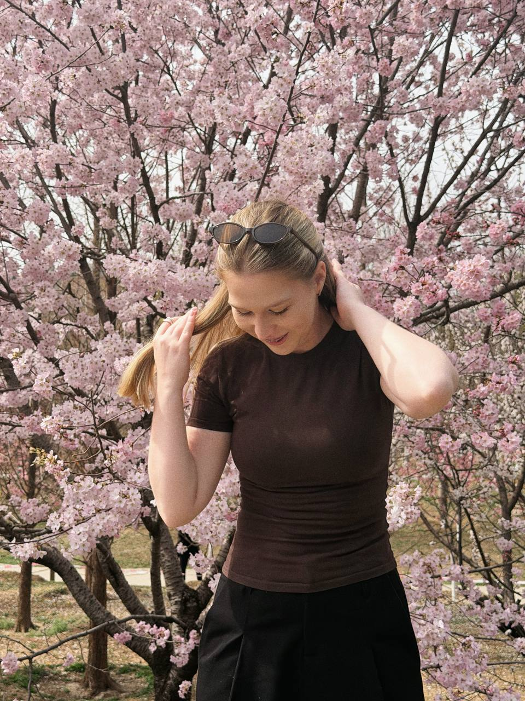

бренд-дизайнерСанкт-Петербург4+ года в дизайне
Елизаветаbrand designer
создаю эмоциональную связь между брендом
и аудиторией через дизайн

Привет, я Лиза
Для меня дизайн — это способ передать атмосферу, эмоции и характер бренда. Создать визуальный образ, который не просто привлекает внимание, а остаётся в памяти.
Более 4 лет я работаю с брендингом и визуальными коммуникациями: создаю айдентику, упаковку, полиграфию, мерч и digital-дизайн. В каждом проекте стремлюсь найти баланс между эстетикой, смыслом и задачами бренда.
Работаю в adobe illustrator, photoshop, figma,
а для генерации и видео — в nano banana, chatgpt,
kling ai и capcut.
Портфолио
Навыки
айдентика
логотип, фирменная палитра, типографика
полиграфия
упаковка, печатные и рекламные материалы
мерч
брендированная одежда, аксессуары
презентации
дизайн слайдов, визуализация информации
социальные сети
оформление профилей, шаблоны, контент
в telegram